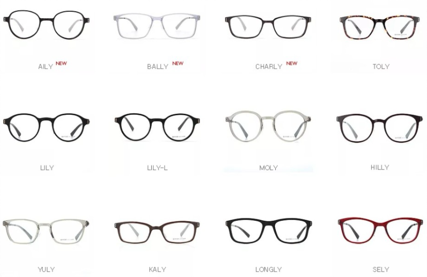

당신에게 어울리는 안경은...
"얇은 뿔테안경"

최근에 인기를 얻고있는 뿔테안경!
얇은 뿔테안경은 얼굴형이 계란형이신 분들에게 추천드려요.
계란형의 얼굴형은 대부분의 안경이 잘 어울리는 얼굴형이예요~
그러므로 트렌디한 디자인의 안경을 쓰는 것도 좋아요!
얇은 뿔테안경은 고급스러우며 튀지 않고 무던한 디자인을 선보여요.
얇은 뿔테안경으로 고급스러운 분위기를 연출해보세요!
신림
이태리안경원(ITALY 1980)
의
'바이코즈 안경테'
는
메탈안경의 취약점인 컬러부분에 유해물질을 사용하지 않고 특수 표면처리기법으로 하여
높은 퀄리티의 색상을 만들어내어 다양한 모양과 색상이 준비되어있습니다!
이태리안경원에서 다양한 모양과 색상으로 분위기 연출해보아요~
다시하기
다른 결과도 보고싶어요!
이 안경 사고싶다면?
Info. 이태리안경원(ITALY 1980)
Tel. 02-888-4849
Adress. 서울 관악구 신림로 327 1층(신림역 2호선 3번출구 20m)
Website.
http://blog.naver.com/italy1980
Kakao Talk. 이태리안경italy1980